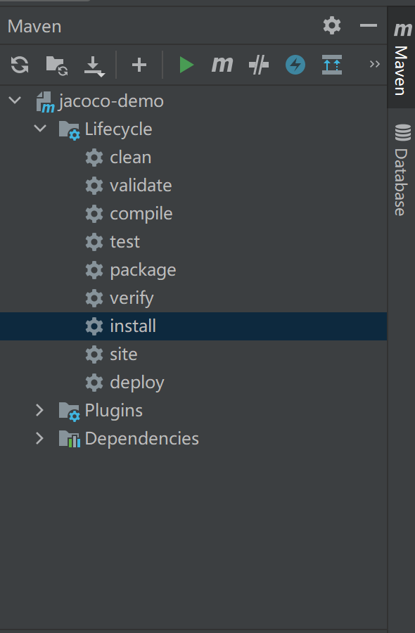
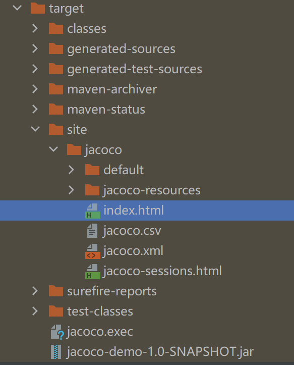
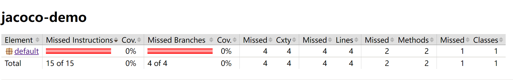
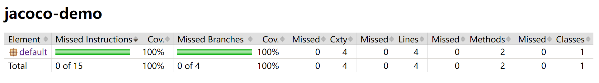
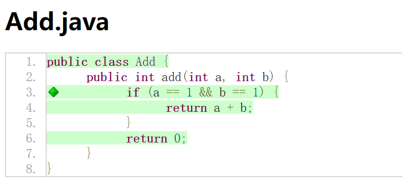

【JaCoCo】代码覆盖率从0到100的入门实践¶

【JaCoco】JaCoCo代码覆盖率从0到100的入门实践¶
JaCoCo全称是Java Code Coverage，Java代码覆盖率，广泛运用于各种测试平台对Java代码的全量覆盖率和增量覆盖率进行统计，分析代码行差异，度量单元测试效果。Jacoco也是精准测试的技术实现手段之一。
入门实践的目标是写点简单代码，再加点单元测试，把JaCoCo跑起来，输出测试报告，看代码覆盖率是怎么回事，了解基本的运行流程。
先写点简单代码：
public class Add {
public int add(int a, int b) {
if (a == 1 && b == 1) {
return a + b;
}
return 0;
}
}
再加点单元测试，这里先加一个什么都不做的单元测试，按理说代码覆盖率会是0：
import org.junit.Test;
public class AddTest {
@Test
public void notCovered() {
}
}
如何把Jacoco跑起来呢？我先尝试了Maven插件的方式，在pom.xml中引入依赖和添加配置：
<dependencies>
<dependency>
<groupId>junit</groupId>
<artifactId>junit</artifactId>
<version>4.12</version>
<scope>test</scope>
</dependency>
<dependency>
<groupId>org.jacoco</groupId>
<artifactId>jacoco-maven-plugin</artifactId>
<version>0.8.7</version>
</dependency>
</dependencies>
<properties>
<maven.compiler.source>8</maven.compiler.source>
<maven.compiler.target>8</maven.compiler.target>
</properties>
<build>
<plugins>
<plugin>
<groupId>org.jacoco</groupId>
<artifactId>jacoco-maven-plugin</artifactId>
<version>0.8.7</version>
<executions>
<execution>
<id>default-prepare-agent</id>
<goals>
<goal>prepare-agent</goal>
</goals>
</execution>
<execution>
<id>default-report</id>
<goals>
<goal>report</goal>
</goals>
</execution>
</executions>
</plugin>
</plugins>
</build>
引入了junit和jacoco-maven-plugin两个依赖。
插件中配置了两个execution，并指定了两个goal，prepare-agent（插桩）和report（报告）。
然后执行maven的install，如果是在IDEA中可以直接点击按钮：

在target下就能看到html报告了：

打开看果然代码覆盖率是0：

修改一下单元测试：
import org.junit.Test;
public class AddTest {
@Test
public void covered() {
Add addDemo = new Add();
addDemo.add(1, 1);
addDemo.add(1, 2);
addDemo.add(2, 2);
}
@Test
public void notCovered() {
}
}
先maven clean以后再install，就能看到：

覆盖率100%了。一共有4行需要覆盖的代码行：

至于为什么需要4行，以及我添加的单元测试为什么能够100%覆盖，文字描述有点说不清楚。可以关注我的B站，搜索dongfanger关注，我会进行相关的演示和说明。
参考资料：
Jacoco官网Maven示例 https://www.jacoco.org/jacoco/trunk/doc/maven.html
Jacoco报告详解 https://blog.csdn.net/sayoko06/article/details/99312875